01
Хүн бүрийн зорилго өөр.
Суралцагчийн сурлагын амжилт, хэлний түвшин, санхүүгийн боломж, мэргэжлийн сонирхол болон цаашдын төлөвлөгөөг харгалзан үзэж, тохирох сургууль, хөтөлбөрийг сонгоход нь тусална.
Солонгост суралцах зорилгыг тань бодит алхам болгоход бид мэдээлэл, зөвлөгөө, тууштай дэмжлэгээр тусална.
TS Mirae Боловсрол зуучлалын төв нь 2020 оноос эхлэн бидэнд ирсэн ЕБС-ийн 11 болон 12 дугаар ангийн төгсөгчдийн хүсэлтийн дагуу БНСУ-ын их сургуульд 657 оюутныг элсүүлсэн түүхтэй. Түүнчлэн манай байгууллага нь 2026 онд албан ёсны боловсрол зуучлалын төв болж үүсгэн байгуулагдсан. Монгол–Солонгосын Боловсрол зуучлалын салбарт тэргүүлэн ажиллах эрч хүчтэй мэргэжлийн байгууллага юм.
Бид БНСУ-ын нэр хүндтэй их, дээд сургуулиудтай албан ёсоор хамтран ажилладаг бөгөөд одоог хүртэл нийт 875 гаруй залуусыг Солонгос улсын шилдэг их дээд сургуулиудад амжилттай суралцахад нь зуучлан, дэмжиж ирсэн туршлагатай.
Боловсролын салбар дахь итгэлцэл, найдвартай үйлчилгээний үнэт зүйлст тулгуурлан, бид залуус бүрийн зорилгод хүрэх замыг хялбарчилж, тэдний ирээдүйд бодит хөрөнгө оруулалт хийхийг зорьдог.
TS Mirae нь Солонгос улсад суралцах хүсэлтэй залууст зориулан дараах чиглэлийн цогц үйлчилгээ, сургалт, зөвлөгөөг санал болгодог:
Бид дараах БНСУ-ын их, дээд сургуулиудын элсэлтийн боломжийг суралцагчдад танилцуулдаг.
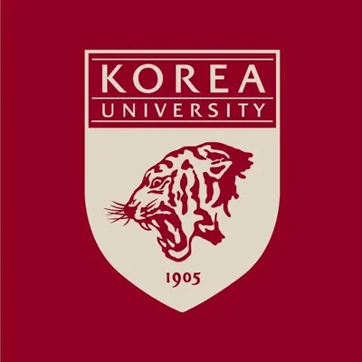
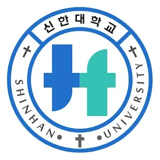
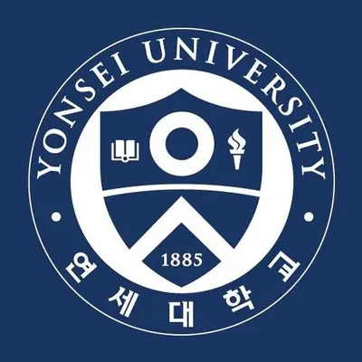
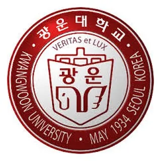
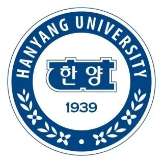
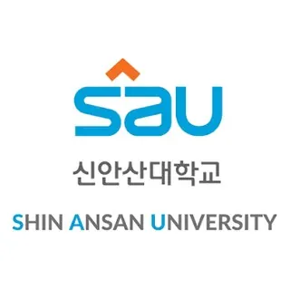
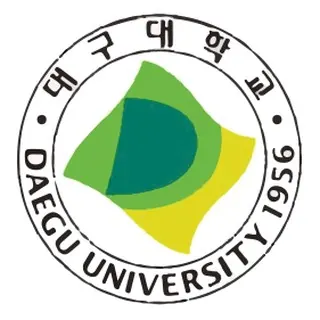
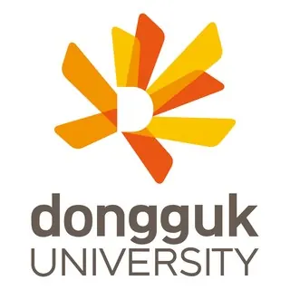
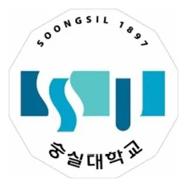
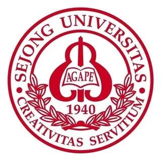
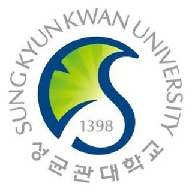
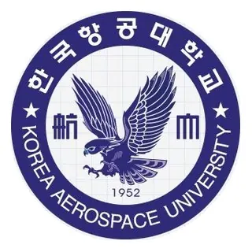
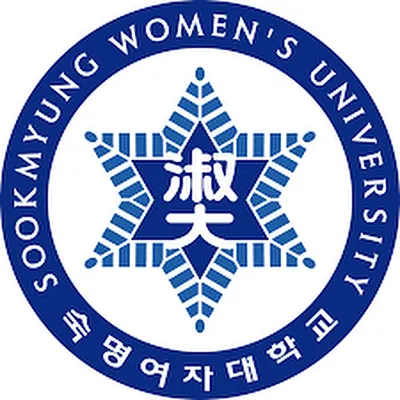
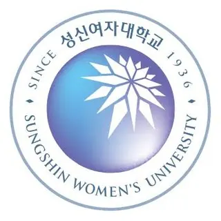
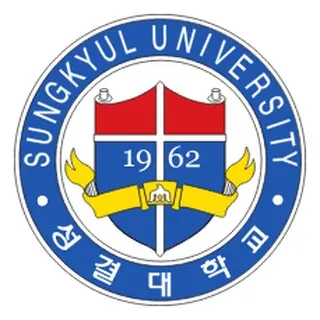
Хөтөлбөр, элсэлтийн шаардлага, төлбөр болон тэтгэлгийн нөхцөл нь сургууль, хөтөлбөр, элсэлтийн хугацаанаас хамааран өөр байж болно.
TS Mirae Боловсрол зуучлалын төв нь 2020 оноос эхлэн бидэнд ирсэн ЕБС-ийн 11 болон 12 дугаар ангийн төгсөгчдийн хүсэлтийн дагуу БНСУ-ын их сургуульд 657 оюутныг элсүүлсэн түүхтэй. Түүнчлэн манай байгууллага нь 2026 онд албан ёсны боловсрол зуучлалын төв болж үүсгэн байгуулагдсан. Монгол–Солонгосын Боловсрол зуучлалын салбарт тэргүүлэн ажиллах эрч хүчтэй мэргэжлийн байгууллага юм.
Бид БНСУ-ын нэр хүндтэй их, дээд сургуулиудтай албан ёсоор хамтран ажилладаг бөгөөд одоог хүртэл нийт 875 гаруй залуусыг Солонгос улсын шилдэг их дээд сургуулиудад амжилттай суралцахад нь зуучлан, дэмжиж ирсэн туршлагатай.
Боловсролын салбар дахь итгэлцэл, найдвартай үйлчилгээний үнэт зүйлст тулгуурлан, бид залуус бүрийн зорилгод хүрэх замыг хялбарчилж, тэдний ирээдүйд бодит хөрөнгө оруулалт хийхийг зорьдог.
TS Mirae нь Солонгос улсад суралцах хүсэлтэй залууст зориулан дараах чиглэлийн цогц үйлчилгээ, сургалт, зөвлөгөөг санал болгодог:
Гадаадад суралцах нь зөвхөн сургуульд элсэхээр хязгаарлагдахгүй. Суралцагч шинэ орчинд дасан зохицож, бие даан амьдарч, боловсрол эзэмшихийн зэрэгцээ ирээдүйнхээ төлөө олон шийдвэр гаргах шаардлагатай болдог.
Тиймээс TS MIRAE нь зөвхөн сургууль сонгох, элсэлтийн материал бүрдүүлэхэд туслахаас гадна суралцагчдад дараагийн алхмаа төлөвлөхөд шаардлагатай мэдээлэл, зөвлөгөө өгөхийг зорьдог.
Хэлний бэлтгэлээс бакалавр, магистр, докторын түвшний боловсрол хүртэл суралцагч бүрийн зорилго, бэлтгэл, боломж өөр байдаг. Иймээс бид тухайн хүний нөхцөл байдлыг харгалзан үзэж, боломжит сонголтуудыг судлахад нь туслахыг чухалчилдаг.
Бидний зорилго бол зүгээр нэг сургууль санал болгох биш, суралцагчдад өөрийн зорилго, боломжид нийцсэн сонголт хийхэд нь туслах юм.
Суралцагчийн сурлагын амжилт, хэлний түвшин, санхүүгийн боломж, мэргэжлийн сонирхол болон цаашдын төлөвлөгөөг харгалзан үзэж, тохирох сургууль, хөтөлбөрийг сонгоход нь тусална.
Сургуулийн элсэлтийн шаардлага, бүрдүүлэх материал, сургалтын төлбөр, тэтгэлэг болон бусад нөхцөлийн талаар ойлгомжтой, нягталсан мэдээлэл хүргэхийг эрхэмлэнэ. Сургууль, хөтөлбөр бүрийн шаардлага ялгаатай тул холбогдох мэдээллийг тухайн нөхцөлд нь тулгуурлан нягтална.
Сургуульд элсэх болон визийн шийдвэр нь холбогдох байгууллагын шаардлага, үнэлгээнээс хамаардаг. Тиймээс бид баталгаагүй амлалт өгөхийн оронд бодит шаардлага, боломж болон анхаарах зүйлсийг тайлбарлаж, суралцагчдыг бэлтгэлээ зөв хангахад нь чиглүүлнэ.
Суралцагч сургуульдаа элсэн орсны дараа ч холбоотой байж, шаардлагатай үед мэдээлэл, зөвлөгөө өгч, тулгарсан асуудлаа шийдвэрлэхэд нь боломжит хүрээнд туслан дэмжихийг зорьдог.
TS MIRAE-ийн баг нь элсэлтийн зөвлөх ажлын туршлага болон БНСУ-д суралцсан хувийн туршлагыг хослуулан ажилладаг.
Сургууль сонгох, элсэлтийн бэлтгэлийг хангах болон суралцах үйл явцыг эхлүүлэх шатанд зөвлөгөө өгч ирсэн практик туршлагатай.
Солонгост суралцахаар ирсэн хувийн туршлагад тулгуурлан оюутанд шаардлагатай мэдээлэл болон тулгарч болзошгүй асуудлыг бодитоор ойлгодог.
Энэ хоёр чиглэлийн туршлагыг нэг багт нэгтгэснээр TS MIRAE-ийн зөвлөгөө нь албан ёсны шаардлага, журамд төдийгүй бодит практикт тулгуурласан байдаг.
Хоёр улсад, нэг зорилгын дор: Монгол болон Солонгос дахь оффисууддаа бид суралцагчтайгаа биечлэн болон зайнаас холбогддог.
Улаанбаатар хотод байрлах манай оффист хандан Солонгост суралцах боломж, сургуулийн сонголт, элсэлтийн шаардлага болон бичиг баримтын талаар зөвлөгөө авах боломжтой.
Сөүл хотод байрлах манай оффис нь Солонгост суралцаж буй болон суралцахаар төлөвлөж буй хүмүүст мэдээлэл, зөвлөгөө хүргэхэд чиглэн ажилладаг.
Оффист биечлэн ирж уулзах бол урьдчилан холбогдож, уулзалтын цаг болон байршлаа баталгаажуулахыг зөвлөж байна.
Монголын залуусын боловсролын боломжийг өргөжүүлж, олон улсын боловсрол эзэмших хүсэл эрмэлзлийг нь мэргэжлийн зөвлөгөө, мэдээлэл, тууштай дэмжлэгээр бодит алхам болгоход туслах.
Элсэлтээс эхэлж, ирээдүйг тань дэмжинэ.
Та Солонгост хэлний бэлтгэлд суралцах, бакалавр, магистр эсвэл докторын түвшинд боловсрол эзэмшихээр төлөвлөж байгаа бол TS MIRAE-тэй холбогдож, өөрийн зорилго, боломжид нийцсэн сургалтын сонголтуудын талаар зөвлөгөө аваарай.
Бид таны төлөвлөгөөг сонсож, боломжит хувилбаруудыг судлан, элсэлтийн бэлтгэлээ хангахад тань туслахад бэлэн байна.
TS MIRAE нь Солонгост суралцахаар төлөвлөж буй хүмүүст сургуулийн сонголт, элсэлтийн бэлтгэл, бичиг баримт бүрдүүлэлт болон холбогдох үйл явцын талаар зөвлөгөө, дэмжлэг үзүүлдэг.
Суралцагчийн боловсролын зорилго, хэлний түвшин, мэргэжлийн сонирхол болон санхүүгийн боломжийг харгалзан Солонгосын сургуулиудын боломжит сонголтыг судлахад тусална.
Үйлчилгээнд:Сургуулийн шаардлагад нийцүүлэн элсэлтийн материал бэлтгэх, шаардлагатай бичиг баримтын жагсаалтыг ойлгох, материал бүрдүүлэлтийн үе шатыг төлөвлөхөд дэмжлэг үзүүлнэ.
Үйлчилгээнд:Солонгост суралцахтай холбоотой элсэлтийн болон визийн материалын орчуулгын үйлчилгээ үзүүлнэ. Орчуулгын шаардлага нь баримт бичгийн төрөл, хүлээн авах байгууллагын нөхцөлөөс хамаарч өөр байж болох тул захиалга өгөхөөс өмнө шаардлагатай орчуулгын төрөл, баталгаажуулалтын нөхцөлийг тодруулна.
Үйлчилгээнд:Бидний дэмжлэг зөвхөн сургуульд элсэх үеэр хязгаарлагдахгүй. Суралцагч сургуульдаа орсны дараа ч шаардлагатай мэдээлэл, зөвлөгөөгөөр туслахыг зорьдог.
Үйлчилгээнд:TS MIRAE нь суралцагч бүрийн нөхцөл байдлыг харгалзан үзэж, боломжит хүрээнд зөвлөгөө, дэмжлэг үзүүлнэ.
Суралцахаар төлөвлөж буй түвшин, сонирхож буй сургуулиа бидэнд илгээгээрэй.
TS MIRAE нь Солонгост суралцахтай холбоотой элсэлтийн болон визийн бичиг баримтын орчуулгын үйлчилгээ үзүүлдэг.
Орчуулга хийлгэхээс өмнө материалаа нягтлах нь чухал.
Сургуулийн элсэлт болон визийн материалд тавигдах шаардлага нь тухайн сургууль, байгууллага болон баримт бичгийн төрлөөс хамааран ялгаатай байж болно. Тиймээс орчуулга хийлгэхээс өмнө шаардлагатай хэл, баталгаажуулалтын төрөл болон материал хүлээн авах байгууллагын нөхцөлийг нягтлах нь чухал.
Сургуулийн элсэлтийн бичиг баримтын орчуулга.
Виз мэдүүлэхтэй холбоотой бичиг баримтын орчуулга.
Их сургууль болон визийн материалын талаар зөвлөгөө өгөх.
Орчуулах шаардлагатай бичиг баримтын төрөл болон зорилгоо бидэнд мэдэгдэнэ.
Баримт бичиг хүлээн авах сургууль, байгууллагын шаардлагад нийцсэн орчуулгын төрлийг тодруулна.
Баримт бичгийн төрөл, хуудасны тоо болон шаардлагатай хугацаанд үндэслэн үнийн санал авна.
Нөхцөлөө баталгаажуулсны дараа орчуулгын үйлчилгээг захиална.
Орчуулгын үнэ, гүйцэтгэх хугацаа болон баталгаажуулалтын нөхцөлийг захиалга бүрээр тодруулна.
Орчуулгын үйлчилгээний талаар дэлгэрэнгүй мэдээлэл болон үнийн санал авахын тулд бидэнтэй холбогдоно уу.
Бичиг баримтын төрөл болон зорилгоо бидэнд мэдэгдэж, үнийн санал аваарай.
Солонгост суралцах боломж, сургуулийн сонголт, элсэлтийн материал, баталгаат орчуулгын үйлчилгээ болон элсэлтийн дараах зөвлөгөөний талаар мэдээлэл авахыг хүсвэл бидэнтэй холбогдоно уу.
Оффист биечлэн ирж уулзах бол урьдчилан холбогдож, уулзалтын цаг болон байршлаа баталгаажуулахыг зөвлөж байна.
Та суралцахаар төлөвлөж буй түвшин, сонирхож буй сургууль болон асуух зүйлсээ бидэнд илгээж болно. Бид таны хүсэлтийг хүлээн авч, дараагийн алхмын талаар мэдээлэл өгөх болно.
Сургууль дээр дарж байгуулагдсан он, кампус, нэрд гарсан мэргэжил, олон улсын рейтинг, элсэлтийн өрсөлдөөнийг харна уу.
Хөтөлбөр, элсэлтийн шаардлага, төлбөр болон тэтгэлгийн нөхцөл нь сургууль, хөтөлбөр, элсэлтийн хугацаанаас хамааран өөр байж болно.
Элсэлтийн шаардлага, хөтөлбөр, төлбөр болон тэтгэлгийн талаар бидэнтэй холбогдоорой.
고려대학교
Солонгосын SKY гэж нэрлэгддэг тэргүүлэх их сургуулиудын нэг.
Бизнес, нийгмийн ухаанаас эхлээд технологи, медиа чиглэлээр өргөн сонголттой.
📍 Anam · Seoul
Сургуулийн үндсэн кампус. Business, Humanities, Media, Engineering зэрэг олон чиглэл төвлөрдөг.
📍 Sejong City
Science & Technology, Global Business, Public Policy, Culture & Sports зэрэг чиглэлүүдтэй.
Korea University-ийн Seoul Campus нь түүхэн чулуун барилга, Gothic хэв маягийн архитектураараа танигддаг.
Гаднаасаа нээлттэй талбай мэт харагддаг ч доороо оюутнуудад зориулсан underground space-тай.
Бар бол Korea University-ийн бэлгэдэл.
Хоёр сургууль жил бүр уламжлалт спортын томоохон өрсөлдөөн зохион байгуулдаг.
K-pop artist-ууд оролцдог сургуулийн хамгийн алдартай student events-ийн нэг.
Рейтингийн мэдээлэл жил бүр шинэчлэгддэг тул албан ёсны эх сурвалжаас дахин шалгана уу.
2027 수시 경쟁률
Ойролцоогоор 1 суудалд 20 хүн өрсөлдсөн гэсэн үг. (Солонгосын сурагчид)
※ Major болон admission track-аас шалтгаалан өрсөлдөөн ялгаатай.
Элсэлтийн шаардлага, хөтөлбөр, төлбөр болон тэтгэлгийн талаар бидэнтэй холбогдоорой.
신한대학교
Практик ур чадвар, мэргэжлийн боловсролд чиглэсэн Солонгосын их сургуулиудын нэг.
Бизнес, технологиос эхлээд медиа, эрүүл мэнд, урлагийн чиглэлээр суралцах боломжтой.
📍 95, Hoam-ro, Uijeongbu-si, Gyeonggi-do
📍 30, Bulma-ro 40beon-gil, Dongducheon-si, Gyeonggi-do
Солонгосын Кёнги мужид байрлах хоёр кампустай. Uijeongbu кампус нь метроны 1-р шугамын Shinhan University Station (Mangwolsa Temple Station)-аас явганаар ойролцоогоор 1 минутын зайд байрладаг.
Нийгмийн ухаан, бизнесээс эхлээд технологи, эрүүл мэнд, урлаг, спорт хүртэл олон чиглэлээр суралцах сонголттой.
Шинханы лого дахь SH үсэг нь гар гараасаа хөтлөлцсөн хоёр хүний дүрсийг илэрхийлдэг. Энэ нь хамтын ажиллагаа, харилцан дэмжлэгийн бэлгэдэл юм.
Сургуулийн жил бүрийн уламжлалт фестиваль. Оюутнуудын тайзны үзүүлбэр, клубийн үйл ажиллагаа, хоол болон соёлын танилцуулга зэрэг олон төрлийн арга хэмжээ болдог.
Сургууль болон орон нутгийн иргэдийг холбосон олон улсын соёлын арга хэмжээ. Өөр өөр орны соёлтой танилцах боломж олгодог.
2026 оны чансаа
Эх сурвалж: Webometrics, 2026 оны 7-р сар.
2027 оны 수시 элсэлт
2027 оны өрсөлдөөний албан ёсны эцсийн тоог баталгаажуулах шатандаа байна. Хамгийн сүүлийн, найдвартай тоог тухайн сургуулийн албан ёсны элсэлтийн хуудаснаас шалгана уу. Эдгээр тоо нь Солонгосын дотоодын сурагчдад зориулсан 수시 элсэлтийн статистик бөгөөд гадаад оюутны элсэлтийг илэрхийлэхгүй.
Элсэлтийн шаардлага, хөтөлбөр, төлбөр болон тэтгэлгийн талаар бидэнтэй холбогдоорой.
연세대학교
Солонгосын SKY гэж нэрлэгддэг тэргүүлэх их сургуулиудын нэг.
Бизнес, нийгмийн ухаанаас эхлээд технологи, медиа, амьдралын шинжлэх ухаан хүртэл өргөн сонголттой.
📍 Seoul · Sinchon
Ёнсэ их сургуулийн үндсэн кампус. Түүхэн барилга байгууламж, сургалтын орчин болон оюутны идэвхтэй амьдралаараа онцлог.
📍 Incheon · Songdo
Инчоны Сондо хотод байрладаг. Олон улсын орчин, орчин үеийн сургалтын байгууламж, оюутны дотуур байртайгаараа онцлог.
📍 Wonju · MIRAE
Байгалийн үзэсгэлэнт орчинд байрлах бөгөөд сургалт, судалгаа болон оюутны амьдралыг хослуулсан кампус юм.
Түүхэн өнгө төрх, үзэсгэлэнт ногоон орчин, сүрлэг барилгуудаараа алдартай. Суралцахын зэрэгцээ их сургуулийн онцгой уур амьсгалыг мэдрэх боломжтой.
Орчин үеийн хотын өнгө төрхийг шингээсэн, цэвэр цэмцгэр зохион байгуулалттай кампус. Олон улсын оюутнуудын хамт суралцаж, шинэ соёл, шинэ орчинтой танилцах боломж бүрдүүлдэг.
Байгалийн үзэсгэлэнт орчин, тайван уур амьсгалаараа онцлог. Суралцах, өөрийгөө хөгжүүлэх, оюутны амьдралаа баялаг өнгөрүүлэх таатай орчинтой.
Ёнсэ Үү-ап брэндийн сүүгээр хийсэн, CU дэлгүүрүүдээр худалдаалагддаг кремтэй талх Солонгосын амттаны хит бүтээгдэхүүний нэг болжээ. 2022 онд худалдаанд гарсан уг талх 2026 оны дөрөвдүгээр сар гэхэд 100 сая ширхэгийн борлуулалтад хүрсэн байна.
Ёнсэгийн түүх 1885 онд байгуулагдсан Гванхевон (광혜원) эмнэлэгтэй холбоотой. Энэ нь Солонгосын анхны орчин үеийн эмнэлэг байсан бөгөөд хожим Ёнсэгийн анагаах ухааны боловсрол, эмнэлгийн байгууллагын үндэс болжээ.
1957 онд Ёнхи их сургууль болон Северанс анагаах ухааны сургууль нэгдэж, өнөөгийн Ёнсэ их сургууль байгуулагдсан. Тиймээс сургуулийн нэр нь ч хоёр байгууллагын түүхтэй холбоотой.
Ёнсэ их сургууль нь олон улсын чансаанд өндөр байр эзэлдэг, Солонгосын тэргүүлэх их сургуулиудын нэг юм.
Рейтингийн мэдээлэл жил бүр шинэчлэгддэг тул албан ёсны эх сурвалжаас дахин шалгана уу.
2027 수시 경쟁률
Нэг суудлын төлөө дунджаар 14 орчим хүн өрсөлджээ. (Солонгосын сурагчид)
※ Сөүл кампусын 2027 оны 수시 элсэлтийн нийт үзүүлэлт. Мэргэжил болон элсэлтийн төрлөөс шалтгаалан өрсөлдөөний харьцаа ялгаатай.
Элсэлтийн шаардлага, хөтөлбөр, төлбөр болон тэтгэлгийн талаар бидэнтэй холбогдоорой.
광운대학교
Электроник, инженерчлэлийн чиглэлээр түүхэн суурьтай бөгөөд өнөөдөр хиймэл оюун ухаан, робот техник, медиа зэрэг олон чиглэлээр сургалт явуулдаг.
Технологийн чиглэлийн түүхэн сууриа медиа, бизнес болон нийгмийн ухааны хөтөлбөрүүдтэй хослуулсан их сургууль.
📍 Nowon-gu, Seoul
Сөүл хотын Новон дүүрэгт байрладаг. Хотын төвийн Сөүл хотын захиргаа, Дондэмүн, Мёндун орчим руу нийтийн тээврээр зорчих боломжтой.
Kwangwoon University Station-оос сургууль хүртэл ойролцоогоор 6 минут алхана.
Seokgye Station-оос ойролцоогоор 10 минут алхах боломжтой.
Кампусын онцлох орон зайн нэг болох Kwangwoon Square нь 80 жилийн ойн дурсгалын барилгатай нэгтгэсэн цогцолбор юм. Хотын амьдрал дунд суралцахын зэрэгцээ кампусын орчинд хичээллэх боломжтой.
Квангүн их сургуулийн түүх 1934 онд Чо Кванүний байгуулсан радио сургалтын төвөөс эхэлсэн.
Сургуулийн анхны үеэс электроник, радио холбооны боловсролд төвлөрч, Солонгосын технологийн боловсролын хөгжилд хувь нэмэр оруулж ирсэн.
Радио холбооны сургалтаас эхэлсэн түүх нь өнөөдрийн электроник, мэдээлэл, харилцаа холбооны чиглэлийн сургалттай салшгүй холбоотой.
Тайлбар: Дэлхийн болон Азийн үзүүлэлт нь өөр өөр байгууллагын үнэлгээ. БНСУ-ын #42 нь QS-ээс тусад нь гаргасан үндэсний чансаа бус, Азийн жагсаалтад багтсан Солонгосын сургуулиудын байрлалаар тооцсон үзүүлэлт юм.
2027 оны элсэлтийн ерөнхий үзүүлэлт
Нэг элсэлтийн суудлын төлөө дунджаар 15 орчим хүн өрсөлдөж байна.
Эх сурвалж: Kwangwoon University-ийн 2027 оны 수시 (дотоодын эрт элсэлт)-ийн эцсийн статистик.
Элсэлтийн шаардлага, хөтөлбөр, төлбөр болон тэтгэлгийн талаар бидэнтэй холбогдоорой.
한양대학교
Солонгосын инженерийн боловсролын уламжлалаас эхэлж, өнөөдөр судалгаа, технологи, үйлдвэрлэлийг холбосон их сургууль болон хөгжсөн.
Инженерчлэлд суурилсан түүх, боловсролын уламжлал.
ERICA кампуст их сургууль, судалгааны байгууллага, компаниудын хамтын ажиллагааг нэг экосистемд хөгжүүлдэг.
Судалгаа, технологийн хөгжүүлэлт, бизнесийн хэрэглээг хооронд нь холбох боломж.
Hanyang-ийн онцлог нь зөвхөн мэдлэг эзэмшүүлэхэд бус, түүнийг бодит хэрэглээ, инновацтай холбох хандлагад оршино.
📍 Seoul
Ханян их сургуулийн үндсэн кампус. Инженерчлэл, технологи, бизнес болон олон салбарын сургалт, судалгааг нэгтгэсэн хотын кампус.
📍 Ansan
Их сургууль, судалгааны байгууллага, компаниудын хамтын ажиллагааг хөгжүүлдэг. Сургалт, судалгаа болон үйлдвэрлэлийг холбосон орчноороо онцлог.
Ханянгийн түүхэн суурь болсон гол чиглэл. Инженерийн боловсрол, технологийн судалгаагаараа танигдсан.
Механик систем, автомашины инженерчлэл болон ирээдүйн хөдөлгөөнт технологийн чиглэлүүд.
Бизнесийн удирдлага, санхүү, эдийн засгийн чиглэлээр мэргэжилтэн бэлтгэдэг.
Амьдралын шинжлэх ухаан, анагаах ухаан болон эм зүйн судалгааны чиглэлүүд.
Медиа, сэтгүүл зүй, харилцаа холбооны чиглэлээр суралцах боломжтой.
2008 онд Ханян их сургууль Солонгосын анхны их сургуулийн технологийн холдинг компанийг байгуулж, их сургуулийн судалгааг бизнес, технологийн салбарт нэвтрүүлэх шинэ тогтолцоог хөгжүүлсэн.
ERICA кампус нь их сургууль, судалгааны байгууллага, технологийн компаниудын хамтын ажиллагааг нэг дор төвлөрүүлсэн онцлогтой.
Ханян их сургууль оюутнуудыг үйлдвэрлэлийн салбартай холбох дадлага, хамтын ажиллагааны хөтөлбөрүүдийг эртнээс хөгжүүлж ирсэн.
HANYANG UNIVERSITY — WHERE KNOWLEDGE MEETS INDUSTRY.
Эх сурвалж: QS, 2026 оны чансаа.
2027 수시 경쟁률
Нэг суудлын төлөө дунджаар 30 орчим хүн өрсөлджээ. (Солонгосын сурагчид)
※ Hanyang-ийн Seoul кампусын 2027 оны 수시 элсэлтийн нийт үзүүлэлт. Мэргэжил болон элсэлтийн төрлөөс шалтгаалан өрсөлдөөний харьцаа ялгаатай.
Элсэлтийн шаардлага, хөтөлбөр, төлбөр болон тэтгэлгийн талаар бидэнтэй холбогдоорой.
1979 онд мэргэжлийн дээд сургуулийн статустай болж, 서일공업전문대학 нэртэй болсон.
Хиймэл оюун ухааныг зочид буудал, аялал жуулчлал, бизнесийн салбартай хослуулсан тусгай хөтөлбөртэй.
Мэргэжлийн чиглэл тус бүрээр салбартаа шаардлагатай мэдлэг, ур чадварыг эзэмшүүлэхэд чиглэсэн сургалттай.
Сөүл хотод байрлах мэргэжлийн дээд боловсролын байгууллага бөгөөд олон төрлийн мэргэжлийн сонголттой.
📍 28, Yongmasan-ro 90-gil, Jungnang-gu, Seoul
Seoil University-ийн үндсэн кампус Сөүл хотын Жүннан дүүрэгт байрладаг.
Компьютер электроник, цахилгаан, мэдээлэл холбоо, программ хангамж, дижитал ихэр цахилгаан шатны технологи, AI тоглоомын технологи.
Архитектур, биохими-химийн инженерчлэл, барилга ба байгаль орчны инженерчлэл, ухаалаг автомашин.
Коммуникацийн дизайн, загварын үйлдвэрлэл, интерьер, тавилга, үзэсгэлэн ба брэнд дизайн, кино, телевиз, жүжиглэлт, вебтүүн.
Ухаалаг бизнесийн удирдлага, үл хөдлөх хөрөнгийн эрх зүй, медиа хэвлэл, татвар нягтлан бодох бүртгэл, англи, япон, хятад хэл.
Сувилахуй, хүүхдийн боловсрол, хүнсний шим тэжээл, нийгмийн халамж, спортын эрүүл мэнд.
2026 онд AI тоглоомын тэнхимийн оюутны судалгааны баг Солонгосын Аж үйлдвэр, технологийн хамтын ажиллагааны нийгэмлэгийн хаврын эрдэм шинжилгээний хуралд оролцжээ. Тэд 1 аман илтгэл, 8 постер илтгэл танилцуулснаас 1 аман болон 4 постер илтгэл нь шилдэг судалгаагаар шалгарсан.
2026 оны 5-р сард AI тоглоомын тэнхимийн 1–3-р курсын оюутнууд Play XPO үзэсгэлэнд оролцож, тоглоомын салбарын технологи, контент болон хөгжүүлэлтийн чиг хандлагатай танилцсан.
SEOIL UNIVERSITY — LEARNING THROUGH PRACTICE.
Эх сурвалж: Webometrics, 2026 оны 7-р сар. Азийн хувьд баталгаажсан байр байхгүй.
2027 оны 수시 1차 элсэлт
2027 оны өрсөлдөөний албан ёсны эцсийн тоог баталгаажуулах шатандаа байна. Хамгийн сүүлийн, найдвартай тоог тухайн сургуулийн албан ёсны элсэлтийн хуудаснаас шалгана уу. Эдгээр тоо нь Солонгосын дотоодын сурагчдад зориулсан 수시 элсэлтийн статистик бөгөөд гадаад оюутны элсэлтийг илэрхийлэхгүй.
Элсэлтийн шаардлага, хөтөлбөр, төлбөр болон тэтгэлгийн талаар бидэнтэй холбогдоорой.
신안산대학교
Ансан хотод байрладаг, үндсэн нэг кампустай мэргэжлийн коллеж.
Практик сургалтад чиглэсэн.
📍 Danwon-gu, Ansan-si, Gyeonggi-do
Чожи өртөөтэй ойр. Метроны 4-р шугам, Сүин–Бундан, Сохэ шугам.
Цахилгаан, компьютер, механик.
Бизнесийн удирдлага, үл хөдлөх хөрөнгө.
Амьтны эрүүл мэнд.
Видео контент, вэбтүүн.
Гоо сайхны дизайн, хөгжим.
Зочид буудал, хоол үйлдвэрлэл.
Японы Тайва Гакуэн байгууллагатай боловсролын хамтын ажиллагааны санамж бичиг байгуулсан.
Амьтны эрүүл мэнд, асаргааны чиглэлийн оюутнуудад зориулсан тусгай сургалтын байртай.
Эх сурвалж: Webometrics, 2026 оны 7-р сар. Азийн тусдаа байрлалыг баталгаажуулж чадаагүй тул оруулаагүй.
2027 оны 수시 1차 элсэлт
2027 оны өрсөлдөөний албан ёсны эцсийн тоог баталгаажуулах шатандаа байна. Хамгийн сүүлийн, найдвартай тоог тухайн сургуулийн албан ёсны элсэлтийн хуудаснаас шалгана уу. Эдгээр тоо нь Солонгосын дотоодын сурагчдад зориулсан 수시 элсэлтийн статистик бөгөөд гадаад оюутны элсэлтийг илэрхийлэхгүй.
Элсэлтийн шаардлага, хөтөлбөр, төлбөр болон тэтгэлгийн талаар бидэнтэй холбогдоорой.
대구대학교
1981 онд нэгдсэн их сургуулийн статустай болсон. Үндсэн болон Дэгү хотын кампустай.
Тусгай боловсрол, нөхөн сэргээхүйн чиглэлээр танигдсан.
📍 201, Daegudae-ro, Gyeongsan-si
Хаянг өртөөнөөс автобусаар. Имдан, Ённам их сургуулийн өртөөнөөс автобусаар.
📍 Nam-gu, Daegu
Хотын төвийн кампус. Урлаг, дизайнтай холбоотой сургалтын орчин.
Нийгмийн халамж, сэтгэл судлал.
Тусгай боловсрол, багш.
Хөдөлгөөн засал, хөдөлмөр засал.
Компьютер, цахилгаан, механик.
Менежмент, эдийн засаг.
Медиа, визуал дизайн, соёлын контент.
Солонгосын анхны тусгай боловсролын тэнхимийг байгуулсан.
Хөгжлийн бэрхшээлтэй хүмүүст зориулсан дотуур байр нээсэн.
Тусгай хэрэгцээт оюутны дэмжлэгийн төв байгуулсан.
Их сургуулиуд дундаас анхны жолоодлогын нөхөн сэргээх төвийг нээсэн.
Солонгосын тусгай боловсролын түүхтэй сургууль.
Эх сурвалж: Webometrics, 2026 оны 7-р сар.
2027 수시 · квотын доторх (정원내) суудлаар
Нэг суудлын төлөө ойролцоогоор 6–7 хүн өрсөлдсөн гэсэн үг. (Солонгосын сурагчид)
※ Дотоодын элсэлтийн статистик. Гадаад оюутны элсэлтийн өрсөлдөөний харьцаа биш.
Элсэлтийн шаардлага, хөтөлбөр, төлбөр болон тэтгэлгийн талаар бидэнтэй холбогдоорой.
동국대학교
Буддын шашны уламжлалтай, Сөүл хотын төвд байрладаг их сургууль.
120 жилийн түүх, буддын үнэт зүйлс.
📍 Jung-gu, Seoul
Намсан уулын ойролцоо, Dongguk University өртөөтэй шууд холбогдоно. Сөүл хотын төвийн байршилтай.
📍 Gyeongju, Gyeongsangbuk-do
WISE нь тусдаа кампус, элсэлтийн мэдээлэлтэй.
Медиа коммуникаци, зар сурталчилгаа.
Кино, театр, дижитал медиа.
Менежмент, олон улсын худалдаа.
AI, компьютер, инженерчлэл.
Сэтгэл судлал, нийгмийн халамж.
Эм зүй, амьдралын шинжлэх ухаан.
329 их сургуультай, 54 улстай хамтран ажилладаг.
Jeonggakwon хэмээх Солонгосын буддын сүм сургуулийн кампус дотор байрладаг.
1963 онд байгуулагдсан их сургуулийн музейд Үндэсний эрдэнэсийн 2, эрдэнэсийн 8 дурсгалыг багтаасан 5,000 орчим үзмэр хадгалагддаг.
Эх сурвалж: QS, 2026 оны чансаа.
2027 수시 경쟁률
2027 оны элсэлт. Ойролцоогоор 1 суудалд 21 хүн өрсөлдсөн гэсэн үг. (Солонгосын сурагчид)
※ 2027 оны Seoul кампусын дотоодын 수시 элсэлтийн үзүүлэлт. Гадаад оюутны элсэлтийн харьцаа биш.
Эсээний (논술) шалгалтын хамгийн өндөр өрсөлдөөнтэй мэргэжлүүд:
Элсэлтийн шаардлага, хөтөлбөр, төлбөр болон тэтгэлгийн талаар бидэнтэй холбогдоорой.
숭실대학교
1954 онд Сөүл хотод дахин нээгдсэн. Сандо кампустай.
Солонгосын IT боловсролын анхдагчдын нэг.
📍 369, Sangdo-ro, Dongjak-gu, Seoul
Сөүлийн Дунжак дүүрэг. Метроны 7-р шугам, Soongsil University өртөөний ойролцоо.
Кампусын цагаан морины хөшөө нь сургуулийн таних тэмдгийн нэг болсон.
Компьютер, программ хангамж.
AI, мэдээллийн технологи.
Менежмент, санхүү.
Электроник, химийн инженер.
Сэтгэл судлал, нийгмийн халамж.
Англи хэл, түүх, философи.
Пёньян хотод байгуулагдсан.
Японы албадан сүм мөргөлийн бодлогыг эсэргүүцэн сургуулиа сайн дураар хаасан.
Сөүл хотод дахин нээгдсэн.
Солонгосын анхны электрон тооцооллын тэнхимүүдийн нэгийг байгуулсан.
Сонирхолтой түүх.
1967 онд Солонгосын христийн соёлын музей байгуулагдсан.
Түүх, шашин, боловсролын холбогдолтой үзмэрүүдтэй.
Сургуулийн түүхэн өвийг хадгалдаг.
Эх сурвалж: QS World University Rankings 2026, QS Asia University Rankings 2026.
2027 수시 최종 경쟁률
Ойролцоогоор 1 суудлын төлөө 24 хүн өрсөлдсөн гэсэн үг. (Солонгосын сурагчид)
※ Мэргэжил болон элсэлтийн төрлөөс (전형) шалтгаалан өрсөлдөөний харьцаа ялгаатай. Энэ нь гадаад оюутны элсэлтийн үзүүлэлт биш. Сургуулийн мэдээгээр Uway Apply системийн саатлын улмаас зарим өргөдөл цуцлагдаж болзошгүй тул эцсийн тоо бага зэрэг өөрчлөгдөж магадгүй.
Элсэлтийн шаардлага, хөтөлбөр, төлбөр болон тэтгэлгийн талаар бидэнтэй холбогдоорой.
세종대학교
1940 онд Kyung Sung Humanities Institute нэрээр байгуулагдаж, 1987 онд их сургуулийн статустай болсон.
Kyung Sung Humanities Institute нэрээр байгуулагдсан.
Sejong College нэртэй болсон.
Их сургуулийн статустай болсон.
📍 209 Neungdong-ro, Gwangjin-gu, Seoul
Метроны 7-р шугам — Children's Grand Park буудал. Children's Grand Park-ийн ойролцоо байрладаг.
Номын сан, лаборатори, урлаг болон спортын байгууламжтай.
Зочид буудал, аялал жуулчлал.
Компьютер, программ хангамж, AI.
Механик, сансар, электроник.
Бизнесийн удирдлага, эдийн засаг.
Кино, хөгжим, бүжиг, анимэйшн.
Физик, хими, биотехнологи.
Kyung Sung Humanities Institute нэрээр үүсгэн байгуулагдсан.
1999 онд Солонгосын анхны WTO Depository Library болсон.
Их Сэжон хааны нэрээр нэрлэгдсэн.
WTO Depository Library гэдэг нь Дэлхийн худалдааны байгууллагын албан ёсны баримт бичиг, тайлан, судалгааны материалыг хадгалж, судлаачид болон олон нийтэд ашиглуулах эрхтэй номын сан юм.
Quantum × AI судалгааны төв байгуулах төсөл.
Хиймэл дагуулын сүлжээний судалгаа.
Цахилгаан автомашины батарейн шинэ материалын судалгаа.
Эх сурвалж: Times Higher Education (THE), 2026.
2027 수시 최종 경쟁률
Ойролцоогоор 1 суудлын төлөө 18 хүн өрсөлдсөн гэсэн үг. (Солонгосын сурагчид)
※ Мэргэжил болон элсэлтийн төрлөөс (전형) шалтгаалан өрсөлдөөний харьцаа ялгаатай. Энэ нь гадаад оюутны элсэлтийн үзүүлэлт биш.
Элсэлтийн шаардлага, хөтөлбөр, төлбөр болон тэтгэлгийн талаар бидэнтэй холбогдоорой.
성균관대학교
Солонгосын 600 гаруй жилийн боловсролын өвийг орчин үеийн шинжлэх ухаан, технологитой хослуулсан их сургууль.
Жосоны үеийн төрийн дээд боловсролын байгууллага Sungkyunkwan байгуулагдсан.
Орчин үеийн Sungkyunkwan College дахин байгуулагдсан.
Их сургуулийн статустай болсон.
Сүвон дахь Байгалийн шинжлэх ухааны кампус нээгдсэн.
Samsung Group сургуулийн сангийн удирдлагад оролцож эхэлсэн.
Уламжлалт хүмүүнлэгийн боловсролыг орчин үеийн судалгаа, инновацтай холбодгоороо онцлог.
📍 Jongno-gu, Seoul
Хүмүүнлэг, нийгмийн ухаан, эдийн засаг, бизнесийн чиглэлүүд. Метроны 4-р шугамын Hyehwa өртөөний ойролцоо.
📍 Jangan-gu, Suwon
Байгалийн шинжлэх ухаан, инженерчлэл, технологийн чиглэлүүд. Судалгаа, лаборатори, шинжлэх ухааны сургалтын орчин.
Цахилгаан электроник, механик, химийн инженерчлэл.
Компьютерын ухаан, программ хангамж, хиймэл оюун ухаан.
Бизнесийн удирдлага, эдийн засаг, олон улсын бизнес.
Анагаах ухаан, эм зүй, биотехнологи.
Түүх, философи, хэл шинжлэл.
Улс төр судлал, сэтгэл судлал, олон улсын харилцаа.
1475 онд байгуулагдсан Jongyeonggak нь Солонгосын анхны номын сан гэж сургуулийн түүхэнд тэмдэглэгддэг.
1519 оны орчим тарьсан гэж үздэг хоёр гинкго мод нь Солонгосын Байгалийн дурсгалт зүйл №59-д бүртгэлтэй.
Тухайн үеийн оюутнууд Күнзийн сургаал, математик, ёс зүйгээс гадна хөгжим, нум сум, морь унах зэрэг хичээл үздэг байжээ.
Эх сурвалж: QS, 2026 оны чансаа.
2027 수시 경쟁률
Ойролцоогоор 1 суудлын төлөө 30 хүн өрсөлдсөн гэсэн үг. (Солонгосын сурагчид)
※ Солонгосын дотоодын элсэлтийн 수시 үзүүлэлт. Мэргэжил болон элсэлтийн төрлөөс (전형) шалтгаалан өрсөлдөөний харьцаа ялгаатай. Энэ нь гадаад оюутны элсэлтийн үзүүлэлт биш.
Элсэлтийн шаардлага, хөтөлбөр, төлбөр болон тэтгэлгийн талаар бидэнтэй холбогдоорой.
한국항공대학교
Нисэх, сансар судлалын салбарын мэргэжилтэн бэлтгэх зорилгоор байгуулагдсан, нисэхийн инженерчлэл болон сансрын технологийн боловсролоор мэргэшсэн их сургууль.
6-р сарын 16-нд улсын сургууль хэлбэрээр байгуулагдсан.
Үндэсний нисэхийн коллеж болон дөрвөн жилийн сургалтын тогтолцоонд шилжсэн.
Кампусаа Сөүл хот руу нүүлгэсэн.
Одоогийн Гоян хот дахь байршилдаа шилжин суурьшсан.
Jungseok Foundation сургуулийн удирдлагыг хариуцаж, хувийн их сургуулийн хэлбэрт шилжсэн.
Hankuk Aviation University нэрээ Korea Aerospace University болгон өөрчилсөн.
Нисэхийн салбарын инженерчлэл, сансар судлал, агаарын тээврийн удирдлагыг нэг дор хөгжүүлдэг онцлогтой.
📍 Deogyang-gu, Goyang-si, Gyeonggi-do
Инженерчлэл, AI, нисэхийн менежмент болон бусад сургалтын нэгжүүд төвлөрдөг. Лаборатори, судалгааны төв, нисэхийн музейтэй.
📍 Goyang · Jeju · Uljin
Гоян — нислэгийн сургалтын байгууламж. Жэжү — нислэгийн дадлагын сургалтын төв. Үльжин — нислэгийн сургалтын төв.
Нислэгийн сургалтын төвүүд нь тусдаа их сургуулийн кампус биш, нислэгийн сургалтын зориулалттай төвүүд юм.
Сансрын инженерчлэл, агаарын хөлгийн инженерчлэл, механик инженерчлэл.
Хиймэл оюун ухаан, компьютерын инженерчлэл, AI-ICT.
Цахилгаан электроник, нисэхийн электроник.
Ухаалаг дрон инженерчлэл, AI роботын чиглэл.
Нислэгийн удирдлага, агаарын тээвэр, логистик.
Бизнесийн удирдлага, олон улсын нисэхийн судалгаа.
Агаар болон сансрын эрх зүй, бодлого.
2025 оны 3-р сарын 1-нээс академик бүтцээ шинэчилж, 15 шинэ мэргэжил нээсэн. Мэргэжлийн нэр, элсэлтийн хуваарилалт элсэх жилээс шалтгаалан өөрчлөгдөж болно.
2006 онд Korea Aerospace University CubeSat бичил хиймэл дагуул бүтээж, хөөргөсөн нь Солонгосын их сургуулиудын сансрын судалгааны анхдагч төслүүдийн нэг байв.
1955 оны 6-р сарын 18-нд сургуулийн нислэгийн сургалтын төв байгуулагдаж, анхны нислэгээ хийжээ.
2004 онд KAU Aerospace Center болон Aerospace Museum нээгдсэн. Эдгээр нь нисэх, сансар судлалын түүх, технологийг танилцуулах орчин юм.
Эх сурвалж: Webometrics, 2026 оны 7-р сар. QS World болон QS Asia 2026 чансаанд сургуулийн байр баталгаажаагүй, Азийн байр тогтоогдоогүй.
2027 수시 경쟁률
Ойролцоогоор нэг суудлын төлөө 16 хүн өрсөлдсөн гэсэн үг. (Солонгосын сурагчид)
※ Солонгосын дотоодын элсэлтийн 수시 үзүүлэлт. Мэргэжил болон элсэлтийн төрлөөс (전형) шалтгаалан өрсөлдөөний харьцаа ялгаатай. Энэ нь гадаад оюутны элсэлтийн үзүүлэлт биш.
Элсэлтийн шаардлага, хөтөлбөр, төлбөр болон тэтгэлгийн талаар бидэнтэй холбогдоорой.
이화여자대학교
1886 онд нэг сурагчтайгаар эхэлсэн Солонгосын эмэгтэйчүүдийн боловсролын түүхэн анхдагч байгууллага. Өнөөдөр хүмүүнлэг, нийгмийн ухаанаас эхлээд анагаах ухаан, инженерчлэл, технологи хүртэл олон салбарыг хамарсан судалгааны их сургууль.
5-р сарын 31-нд Америкийн миссионер, сурган хүмүүжүүлэгч Mary F. Scranton Сөүл хотын Жонгдон дүүрэгт ганц сурагчтайгаар эмэгтэйчүүдийн боловсролын сургуулийг нээсэн.
Жосоны хаан Гожон сургуулийг “Ewha Haktang” хэмээн нэрлэсэн.
Коллежийн түвшний сургалт эхэлсэн.
Ewha College албан ёсоор байгуулагдсан.
Сургуулийн кампус одоогийн Синчон дахь байршил руу нүүсэн.
БНСУ-ын анхны албан ёсоор магадлан итгэмжлэгдсэн дөрвөн жилийн их сургууль болсон.
Солонгосын эмэгтэйчүүдийн орчин үеийн боловсролын анхдагч байгууллага.
Анагаах ухаан, эм зүй, сувилахуйн чиглэлээр сургалт, судалгаатай.
Инженерчлэл, AI, байгалийн шинжлэх ухааны салбаруудыг хөгжүүлдэг.
Бизнес, олон улсын судалгаа, хүмүүнлэгийн ухааны өргөн сонголттой.
Олон улсын 1,000 гаруй их сургуультай хамтын ажиллагаатай.
Англи хэлээр заадаг олон төрлийн хичээл, олон улсын солилцооны хөтөлбөртэй.
Эмэгтэйчүүдийн боловсролын боломжийг өргөжүүлэх зорилгоор байгуулагдаж, өнөөдөр олон улсын түвшний сургалт, судалгаа явуулдаг цогц их сургууль болон хөгжсөн.
📍 Seodaemun-gu, Seoul
Ихэнх коллеж, сургалтын үндсэн нэгжүүд байрладаг. Хүмүүнлэг, нийгмийн ухаан, бизнес, урлаг, байгалийн шинжлэх ухаан зэрэг чиглэлүүдтэй. Готик архитектур болон орчин үеийн барилгууд хосолсон кампусын орчинтой. 2008 онд нээгдсэн Ewha Campus Complex (ECC) нь сургалт, соёл, оюутны амьдралыг нэгтгэсэн томоохон байгууламж юм.
📍 Gangseo-gu, Seoul
Анагаах ухааны коллеж байрладаг. Анагаах ухааны сургалт, судалгааны орчинтой.
Ewha Womans University Mokdong Hospital болон Seoul Hospital нь сургуулийн харьяа эмнэлгийн байгууллагууд юм.
Анагаах ухаан, эмнэлзүйн судалгаа.
Эм зүй, сувилахуйн шинжлэх ухаан, Global Health.
Биологи, хими, математик, физик.
Электроник, компьютерын инженерчлэл, AI болон программ хангамж.
Бизнесийн удирдлага, эдийн засаг.
Улс төр судлал, нийгэм судлал, сэтгэл судлал, харилцаа холбоо ба медиа.
Солонгос хэл, гадаад хэл, түүх, философи.
Дүрслэх урлаг, загварын дизайн, хөгжим.
2026 оны 4-р сарын 1-ний албан ёсны мэдээллээр 15 коллеж, 81 тэнхим, мэргэжил, 16 магистр болон докторын сургалтын байгууллагатай.
1886 оны 5-р сарын 31-нд Mary F. Scranton ганц сурагчтайгаар хичээлээ эхлүүлсэн. “Ewha” буюу “Лийрийн цэцэг” гэсэн нэрийг 1887 онд хаан Гожон хайрласан бөгөөд энэ цэцэг сургуулийн бэлгэ тэмдэгт шингэсэн байдаг.
1887 онд Po Goo Nyo Gwan эмнэлэг байгуулагдсан нь Солонгосын эмэгтэйчүүдэд зориулсан анхны эмнэлэг болсон. Энэ нь өнөөгийн Ewha-ийн анагаах ухаан, сувилахуйн боловсролын түүхэн эхлэлтэй холбоотой.
Ewha Womans University Museum нь 1935 онд байгуулагдсан. Солонгосын уламжлалт урлаг, керамик, гар урлал, түүхэн эд өлгийн зүйлсийн цуглуулгатай.
Тайлбар: БНСУ-ын #9 нь QS Asia 2026 жагсаалтад багтсан Солонгосын их сургуулиудын байрлалаар тооцсон үзүүлэлт бөгөөд QS-ээс тусад нь гаргасан үндэсний чансаа биш.
2027 수시 경쟁률
Ойролцоогоор нэг суудлын төлөө 15–16 хүн өрсөлдсөн гэсэн үг. (Солонгосын сурагчид)
※ Солонгосын дотоодын элсэлтийн 수시 үзүүлэлт. Мэргэжил болон элсэлтийн төрлөөс (전형) шалтгаалан өрсөлдөөний харьцаа ялгаатай. Энэ нь гадаад оюутны элсэлтийн үзүүлэлт биш.
Элсэлтийн шаардлага, хөтөлбөр, төлбөр болон тэтгэлгийн талаар бидэнтэй холбогдоорой.
숙명여자대학교
Солонгосын эмэгтэйчүүдийн боловсролын түүхийг бүтээлцсэн их сургууль. 120 жилийн түүхтэй тус сургууль нь эмэгтэйчүүдийн боловсролыг хөгжүүлэх зорилгоор байгуулагдсан бөгөөд өнөөдөр уламжлал, орчин үеийн боловсролыг хослуулсан их сургууль болон хөгжжээ.
14,722 оюутан — 2025 оны их сургуулийн мэдээллийн ил тод байдлын тайланд үндэслэсэн тоо. Сургуулийн уриа: “Gentle power to change the world” — “Дэлхийг өөрчлөх зөөлөн хүч”.
Эх сурвалж: Сургуулийн албан ёсны танилцуулга.
1906 онд таван эмэгтэй суралцагчтайгаар эхэлсэн түүх нь Солонгосын эмэгтэйчүүдийн боловсролын хөгжилтэй салшгүй холбоотой.
2026 оны долоодугаар сарын байдлаар дэлхийн 63 улсын 457 их сургуультай хамтын ажиллагаатай.
Сургуулийн 2026 оны дөрөвдүгээр сарын 1-ний дотоод мэдээллээр бакалавр, магистр болон богино хугацааны хөтөлбөрүүдэд суралцаж буй олон улсын оюутнуудтай.
Сүкмён нь зөвхөн урт түүхээрээ бус, олон улсын боловсролын харилцаагаа өргөжүүлж буйгаараа онцлог.
📍 Ёнсан дүүрэг, Сөүл хот
Сүкмён их сургууль нь Сөүлийн төв хэсэгт байрладаг тул хотын боловсрол, соёл, үйлчилгээний орчинтой ойр амьдрах боломжтой. Хотын амьдралтай ойр байршил нь оюутнуудад хичээлээс гадуур соёлын арга хэмжээ, дадлага болон бусад боломжийг судлахад давуу тал болж чадна.
Сургуулийн орчинтой танилцахдаа зөвхөн барилга байгууламж бус, нийтийн тээвэр, дотуур байр болон өдөр тутмын зардлыг хамтад нь судлах нь зүйтэй.
Сүкмён их сургууль нь олон чиглэлийн бакалавр, магистрын сургалттай.
Сургуулийн бүтцэд багтдаг чиглэлүүдээс жишээ дурдвал:
Эдгээр нь сургуулийн боломжит чиглэлүүдийн жишээ бөгөөд тухайн мэргэжлийн элсэлт, сургалтын хэл болон хөтөлбөрийн нөхцөл жил бүр өөрчлөгдөж болзошгүй. Сонгосон мэргэжлийнхээ албан ёсны сургалтын төлөвлөгөөтэй танилцах хэрэгтэй.
1906 оны тавдугаар сарын 22-нд Мёншин эмэгтэйчүүдийн сургууль таван суралцагчтайгаар үүд хаалгаа нээжээ. Энэ нь өнөөгийн Сүкмён их сургуулийн эхлэл болсон юм.
Сүкмён их сургуулийн музей 1971 онд байгуулагдаж, 2004 онд олон нийтэд нээгджээ. Тус музейн сан хөмрөгт модон эдлэл, шаазан, хувцас, уран зураг, бичгийн дурсгал зэрэг ойролцоогоор 8,000 үзмэр бий.
Chung Young Yang Embroidery Museum нь дэлхийн олон орны соёл, уламжлалыг харуулсан ойролцоогоор 800 хатгамлын үзмэртэй.
Сүкмёны түүх зөвхөн боловсролоор хязгаарлагдахгүй, соёл, урлагийн өвийг судлах, хадгалах үйл ажиллагаатай ч холбогддог.
Эх сурвалж: CWUR (Center for World University Rankings) 2026. Чансааг сургуулийн чанарыг үнэлэх нэг үзүүлэлт болгон ашиглаж болох ч сонголтоо зөвхөн үүгээр шийдэх хэрэггүй. Мэргэжлийн хөтөлбөр, сургалтын төлбөр, тэтгэлэг, төгсөгчдийн боломж болон олон улсын оюутнуудад зориулсан нөхцөлийг хамтад нь харьцуулах нь чухал.
2027 수시 경쟁률
Сүкмён их сургуулийн 2027 оны дотоодын бакалаврын 수시 буюу хугацаанаас өмнөх элсэлтийн мэдээллээр дундаж өрсөлдөөний харьцаа. (Солонгосын сурагчид)
※ Ялангуяа 논술우수자 буюу эсээ, бичгийн шалгалтад суурилсан элсэлтийн ангиллын өрсөлдөөний харьцаа 46.46:1 байжээ.
Анхаарах зүйл: Эдгээр тоо нь Солонгосын дотоодын сурагчдад зориулсан 2027 оны 수시 элсэлтийн үзүүлэлт бөгөөд гадаад оюутны элсэлтийн өрсөлдөөнийг илэрхийлэхгүй. Монгол оюутнуудын хувьд олон улсын элсэлтийн тусгай журам, хэлний шаардлага, материал бүрдүүлэлт болон тэтгэлгийн нөхцөлийг тусад нь шалгах шаардлагатай.
Эх сурвалж: Сүкмён их сургуулийн 2027 оны 수시 өргөдөл хүлээн авалтын албан ёсны эцсийн мэдээ (өргөдөл 2026 оны 9-р сарын 11-нд хаагдсан).
Элсэлтийн шаардлага, хөтөлбөр, төлбөр болон тэтгэлгийн талаар бидэнтэй холбогдоорой.
성신여자대학교
Солонгосын эмэгтэйчүүдийн боловсролын хөгжилд 90 жилийн турш хувь нэмэр оруулсан их сургууль. Сургуулийн нэр болох Sungshin (誠信) нь чин сэтгэл, үнэнч шударга байдлыг илэрхийлдэг.
Сөүл хотын Seongbuk болон Gangbuk дүүрэгт байрлах хоёр кампустай. Donam Sujung кампус нь сургуулийн үндсэн кампус бөгөөд Mia Woonjung Green кампус нь сургалтын өөр өөр чиглэлүүдийг нэгтгэдэг.
Хүмүүнлэг, нийгмийн ухаан, хууль, байгалийн ухаан, инженерчлэл, IT, урлаг, хөгжим, сувилахуйн чиглэлээр сургалт явуулдаг.
Олон улсын оюутны элсэлт, солилцооны хөтөлбөр болон солонгос хэлний сургалтын хөтөлбөртэй. БНСУ-ын Боловсролын яамны олон улсын боловсролын чанарын баталгаажуулалтын IEQAS хөтөлбөрт хамрагдсан.
Боловсролын философи: Be sincere and faithful, Strive for new knowledge, Act independently.
📍 Seongbuk-gu, Seoul
Сургуулийн үндсэн кампус. Хүмүүнлэг, нийгмийн ухаан, хууль, инженерчлэл, IT, урлаг, хөгжим зэрэг олон чиглэлийн сургалтын нэгжүүд байрладаг.
📍 Gangbuk-gu, Seoul
Байгалийн ухаан, инженерчлэл, сувилахуй, хүний экологийн чиглэлийн сургалтын нэгжүүд байрладаг.
Хоёр кампус хоёулаа Сөүл хотод байрладаг бөгөөд метроны 4 болон 6-р шугамын буудлууд сургуулийн орчимд үйлчилдэг.
Хэл, утга зохиол, улс төр, эдийн засаг, нийгмийн шинжлэх ухаан.
Инженерчлэл, мэдээллийн технологи болон технологийн чиглэлийн хөтөлбөрүүд.
Математик, байгалийн шинжлэх ухааны чиглэлүүд.
Дүрслэх урлаг, дизайн, хөгжим.
Сувилахуйн шинжлэх ухаан.
International School of Korean Culture and Technology.
Сүншин их сургууль нь олон салбарын бакалавр, магистрын сургалттай.
Сургуулийг үндэслэгч Lee Suk-jong (이숙종) нь Японы Joshibi College of Art and Design-д барууны уран зургийн чиглэлээр суралцсан. Тэрээр 1936 онд Сүншин эмэгтэйчүүдийн сургуулийг байгуулжээ.
Lee Suk-jong нь 1930 онд Солонгос хэлний нийгэмлэгийн удирдах ажилтнаар ажиллаж, хожим БНСУ-ын Үндэсний Ассамблейн гишүүнээр сонгогдсон.
Сүншин их сургуулийн музей нь үүсгэн байгуулагч Lee Suk-jong-ийн хандивласан эд зүйлст тулгуурлан 1966 оны 9-р сарын 1-нд байгуулагдсан. Анхны нэр нь Амьдралын шинжлэх ухааны музей байв.
1936 онд эмэгтэйчүүдийн сургууль хэлбэрээр эхэлсэн байгууллага 1965 онд багшийн коллеж болж, 1982 оны 3-р сарын 15-нд их сургуулийн статустай болжээ.
Эх сурвалж: UNIRANKS 2027.
2027 수시 경쟁률
Нэг суудлын төлөө ойролцоогоор 12 хүн өрсөлдсөн гэсэн үг. (Солонгосын сурагчид)
※ Эдгээр үзүүлэлт нь Солонгосын дотоодын сурагчдад зориулсан 2027 оны 수시 элсэлтийн статистик юм. Гадаад оюутны элсэлт тусдаа журам, хэлний шаардлага, материал бүрдүүлэлт болон тэтгэлгийн нөхцөлтэй.
Элсэлтийн ангиллаар:
Элсэлтийн шаардлага, хөтөлбөр, төлбөр болон тэтгэлгийн талаар бидэнтэй холбогдоорой.
성결대학교
Христийн шашны боловсролын уламжлалтай, 60 гаруй жилийн түүхтэй их сургууль. Теологийн чиглэлээр эхэлсэн сургалтын үйл ажиллагаагаа өргөжүүлж, өнөөдөр олон салбарын мэргэжлээр боловсрол олгож байна. Олон улсын оюутанд зориулсан бакалавр болон магистрын сургалттай, солонгос хэлний бэлтгэл хөтөлбөртэй.
Христийн шашны боловсролын уламжлалтай бөгөөд теологийн чиглэлээр үүсгэн байгуулагдсан.
Нийгмийн ухаан, бизнес, инженерчлэл, мэдээллийн технологи, урлаг зэрэг салбарт мэргэжил эзэмших боломжтой.
Гадаад оюутны дасан зохицол, солилцоо, хэлний сургалтын үйл ажиллагаатай.
Study in Korea мэдээллийн санд IEQAS гэрчилгээтэй сургууль гэж бүртгэгдсэн.
Сургуулийн боловсролын үндсэн чиглэл нь мэдлэг, ёс суртахуун, нийгмийн хариуцлагыг хослуулсан хувь хүний төлөвшилд чиглэдэг.
📍 53 Sungkyuldaehak-ro, Manan-gu, Anyang-si, Gyeonggi-do
Сургуулийн үндсэн кампус нь Сөүл хотоос холгүй, Кёнги мужийн Анъян хотод байрладаг.
1-р шугамын Myeonghak Station-ы ойролцоо. Хотын орчин: Сөүл хот руу зорчих боломжтой Анъян хотын төв хэсэг.
Сургууль анх 1962 онд Сөүл хотын Chungjeong-ro-д байгуулагдсан. 1975 онд Анъян дахь сургуулийн байр ашиглалтад орж, 1984 онд Сөүл дэх оройн ангиудыг Анъян дахь кампус руу шилжүүлжээ.
Теологи, Христийн шашны боловсрол, номлолын ажил.
Солонгос хэл, уран зохиол, англи хэл, уран зохиол, хятад хэл, уран зохиол.
Олон улсын хөгжлийн хамтын ажиллагаа, төрийн удирдлага, нийгмийн халамж.
Бизнесийн удирдлага, аялал жуулчлалын хөгжил, түгээлт ба олон улсын логистик.
Компьютерийн инженерчлэл, мэдээллийн технологи, медиа программ хангамж, үйлдвэрлэлийн менежментийн инженерчлэл.
Дуу хөгжим, төгөлдөр хуур, жүжиглэлт, кино урлаг, гоо сайхны дизайн, орчин үеийн практик хөгжим.
Sungkyul University нь олон улсын оюутнуудад дээрх чиглэлүүдээр мэргэжил сонгон суралцах боломж олгодог. Мэргэжлийн сонголт болон элсэлтийн боломж нь тухайн жилийн гадаад оюутны элсэлтийн журмаас хамаарна.
1962 оны 9-р сарын 20-нд Сөүл хотын Seodaemun-gu дүүргийн Chungjeong-ro-д сургуулиа байгуулж, сургалтын үйл ажиллагаагаа эхлүүлсэн.
1975 оны 5-р сарын 30-нд Анъян дахь сургуулийн байр ашиглалтад орсон.
1995 оны 3-р сарын 1-нээс Sungkyul University нэртэй болсон.
Эх сурвалж: UNIRANKS 2027. Эдгээр нь UNIRANKS-ийн эрэмбэ бөгөөд QS болон THE-ийн жагсаалттай адилтгаж ойлгож болохгүй.
2027 수시 경쟁률
Нэг суудлын төлөө ойролцоогоор 14 хүн өрсөлдсөн гэсэн үг. (Солонгосын сурагчид)
※ Энэ үзүүлэлт нь Солонгосын дотоодын элсэлтийн 수시 шалгаруулалтын мэдээлэл бөгөөд гадаад оюутны элсэлтийн өрсөлдөөний харьцааг илэрхийлэхгүй. Гадаад оюутны элсэлтэд тавигдах шаардлага, хэлний түвшин болон бүрдүүлэх материал нь тусдаа элсэлтийн журмаар тодорхойлогдоно.
Элсэлтийн шаардлага, хөтөлбөр, төлбөр болон тэтгэлгийн талаар бидэнтэй холбогдоорой.